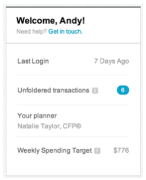

You are given the task to test out a new area of the website that gives the user a snapshot of important information once they login. You are given both an image of the design and acceptance criteria / requirements. Please review them below:

Users should see a welcome module in which they are presented with the following information:
unfoldered.Write a list of questions or uncertainties you may have that you would ask a designer or stakeholder concerning the image or acceptance criteria/requirements.
So I took the liberty of categorizing my list of questions or uncertainties.
For each within, DES = designer, PRO = product, STA = stakeholders.
PROProfile Overview Component, it either is contained within a parent element, like a menu or a modal or view of its own. See ProfileOverviewComponent_Design.png.1024X768PRO & DESPRO & DESPRO & DES
PRODESDESDESDESDESSTA
Unfoldered Transactions Component. epics & stories for them? (see example: ProfileOverviewComponent_FSD.md)Profile Overview Component static or refreshed on a cron or a last-updatebasis?
STASTA
Get in touch. 1, it is in the scope of this test. smoke suite? STAregression suite? STASTAWrite a list of data or users in a certain state that you may need to properly test this.
In ProfileOverviewComponent_FSD.md, the user stories contain some of the variables, parameters and states that I need at minimum to test these stories.
They look like:
Scenario: I want to view the last time I logged in
Given I am on My Profile Overview
And I am `$(isLoggedIn)`
Then I should see `Last Login`
And I should see `$(lastLoggedIn)`Logged Out or Verification Required,unfoldered transactions.unfoldered transactions.unfoldered transactions.Last Login date.new user.Weekly Spending Target.Weekly Spending Target.Weekly Spending Target.Weekly Spending Target.Settings view.Write a list of high-level test scenarios that you can think of based only on the design and acceptance criteria you are given. After you list them out, number them in terms of priority (1 - must test, 2 - should test, 3 - test only if there is time).
See the stories here: ProfileOverviewComponent_FSD.md.
| Priority | Scenario | Reason |
|---|---|---|
| 1 | I want to use my profile overview | This is the epic, parent for all children that follows. |
| 2 | I want a customized welcome message | Seems secondary to Unfoldered Transactions & Weekly Spending Target |
| 2 | I want to view the last time I logged in | Seems secondary to Unfoldered Transactions & Weekly Spending Target |
| 1 | I want to view my notifications | This module is the parent for Unfoldered Transactions. |
| 1 | I want to view the number of Unfoldered Transactions I have | Seems that this is a main driver for this service, tied closer to marketing goals. |
| 1 | I want to view my planner | Seems that this is also a main driver for this service, tied closer to marketing goals. |
| 1 | I want to view my Weekly Spending Target | Seems that this is also a main driver for this service, tied closer to marketing goals. |
Imagine that you find a defect while testing the above. Write a sample defect report.
I actually wrote about this a while ago. Here are the snippets that apply:
Summary: Clicking Unfoldered Transactions redirects user to /404
Environment: Environment Agnostic, issue discovered on Chrome 39.x.x, http://example.com/Profile, Logged in as testUser_09/passwrd0
Acceptance Criteria: Link to JIRA, Trello, etc.
Description:
Steps to reproduce:
testUser_09Profile from navigation barUnfoldered Transactions/404/ProfileWhat scenarios would you consider valid for automation? Why?
This component is small enough to be able to be quickly automated, at least for the green or valid paths. The paths of which do not test error handling or edge cases. However, they should be noted so they can be automated later. Automating based on a priority scale is important too.
Given that the concerns regarding the test scope are addressed and all components are expected to be tested apart of this test plan, then automating around Unfoldered Transactions & Weekly Spending Target components is a good strategy.
Take each story in ProfileOverviewComponent_FSD.md, flesh out scenarios for each test type, or scaffold scenarios under each type, for the types applied.
After mapping epics, stories and scenarios to suites to test types, a test plan and schedule should be drafted.
{kind=link}